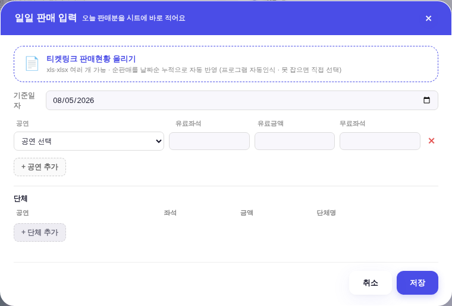
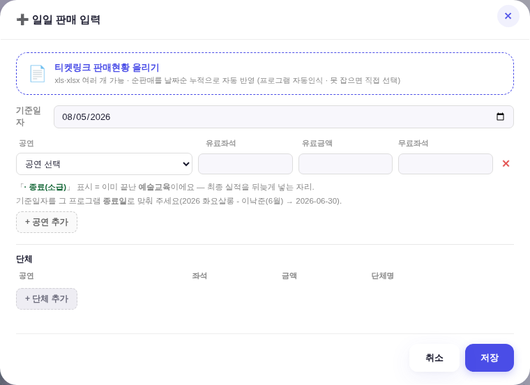

지시(운영자 260805) 「일단 예술교육 공연처럼 표기되게 좀 해줘. 6월거. 6월 30일 종료 건. db에 이 내용 160개 팔렸다고 저장되어 있나 보고. 일단 예술교육이 교육으로 db에 등록되어있는지부터 봐봐. 프로그램에는 등록되어있음」
⚠ 이 세션은 라이브 DB에 못 닿는다 — Worker 호스트가 이 환경 네트워크 정책에 막혀 있고(실측 CONNECT tunnel failed, 403 @ yeulmaru-promo-api.yeulmarumaster.workers.dev:443) API 비번도 없다.
그래서 레포에 커밋된 시트 거울(이관본/data/*.csv)로 읽었다. 아래는 그 거울 실측이다.
| 시트(거울 파일) | 총 행 | 「화요살롱」 매칭 | 읽은 내용 |
|---|---|---|---|
프로그램 programs.csv | 30 | 1건 (있음) | NO 28 · 콘텐츠구분 = 예술교육 · 프로그램ID 260630_01 · 판매 6/2~6/30 · 시작·종료 6/30 · 소극장 · 담당 문지혜 · 구분 「망마 기획전」 |
세부운영관리대장(정리) ops_세부운영관리대장정리.csv | 2,188 | 0건 (없음) | 2026 행은 5건 전부 사업구분 「공연」. 이 대장 통틀어 교육·특강 행은 4건뿐이고 전부 2023년·무료·발권유료 0. |
일일입력 ops_일일입력.csv | 1,477 | 0건 (없음) | 합계좌석 160인 행은 있으나 다른 공연(브런치 콘서트 Ⅲ · 20260707)이다. |
공연마스터 ops_공연마스터.csv | 9 | 0건 (없음) | — |
_BIZ_EDU_SOLD)가 대신 세워 준 값이다._bizEduOpsIdx)은 사업구분 「교육」·「특강」만 본다 — 대장에 「기타」로 넣으면 그 카드가 못 읽는다.「일일 판매 입력」 모달은 판매중만 목록에 올린다(판매기간 중 + 종료 전). 화요살롱은 6/30에 끝나서 두 조건 모두에 걸린다. = 앱 어느 화면에서도 이 건의 실적을 넣을 수 없었고, 그래서 코드에 160을 박아 둔 폴백표가 화면을 대신 지켜 왔다.
_dailyMasters 프로그램 폴백에서 예술교육이면서 같은 해에 끝난 건은 목록에 올린다(소급 입력).
공연은 종전 그대로(끝난 공연이 목록에 쏟아지면 안 된다) · 전시는 자체 목록 별도 · 담당 카테고리 필터도 그대로.운영_일일입력 = 공연이 쓰는 바로 그 시트. 「공연처럼 기록된다」의 실체가 이것이다._salesBuild → _bizSalesIdx가 그 값을 이기고 하드코딩 폴백은 자동 은퇴한다(그 표 주석에 적힌 계약 그대로).목데이터 = 운영자가 가리킨 그 건(예술교육·6/30 종료) + 대조군 2종(판매중 교육 · 끝난 공연). 오늘 = 2026-08-05.


| 실측 항목 | 전 | 후 |
|---|---|---|
_dailyMasters() 목록 | 토요 가족 워크숍 1건 | + 2026 화요살롱 - 이낙준(6월) (back = 2026-06-30) |
| select 보이는 글자 | — | 2026 화요살롱 - 이낙준(6월) · 종료(소급) |
select value(저장 값) | — | 2026 화요살롱 - 이낙준(6월) (꼬리표 미포함 = 오염 0) |
| 끝난 공연(2026 봄 실내악) | 안 뜸 | 안 뜸 (회귀 0) |
일일입력에 그 건 행(기준일자 20260630 · 합계좌석 160)을 넣은 상태를 재현해 _bizEduMonthRows(2026)를 읽었다.
| 항목 | 지금(폴백) | 저장 후(실측) |
|---|---|---|
| 수강생 값 | 160 | 160 (같다 — 값이 바뀌는 게 아니라 출처가 바뀐다) |
값 출처 꼬리표 _vsrc | 「운영자 확정」 | 없음 = 시트 실값 |
그리는 형태 _mo | 막대 | 막대 (끝난 건 = 선 아님 · 공연과 같은 문법) |
tools/scratch/verify_edu_backfill.mjs — 계약 5가지 전건 PASS(끝난 교육 노출 · 판매중 교육 무변 · 끝난 공연 무노출 · 꼬리표는 글자만/value 무변 · 저장 후 폴백 은퇴) · pageerror 0.npm run check ✓ (raw hex 1578/1578 무변 · :root 2/0 · 새 색·토큰 0) · npm run smoke:layout ✓ · npm run smoke ✓